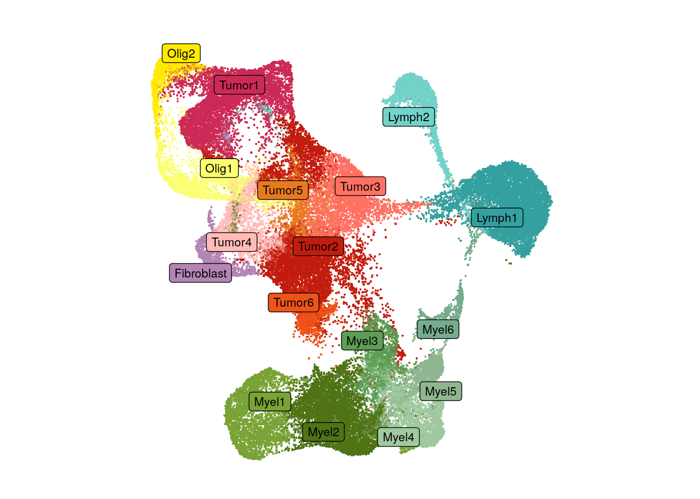
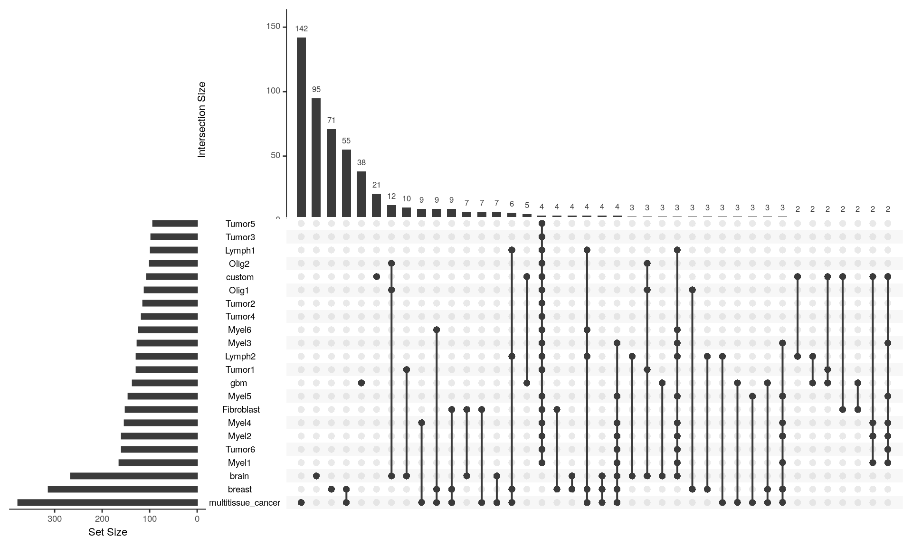
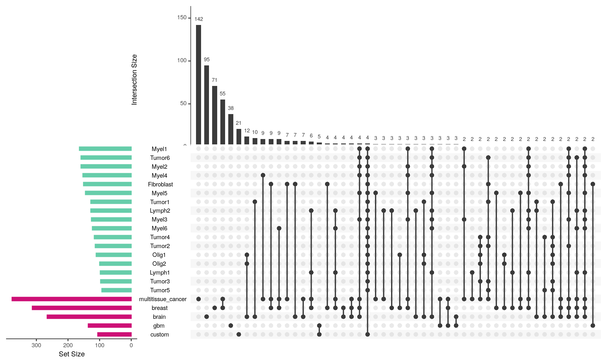

Last updated: 2024-02-08
Checks: 5 2
Knit directory: GBM_Xenium/
This reproducible R Markdown analysis was created with workflowr (version 1.7.1). The Checks tab describes the reproducibility checks that were applied when the results were created. The Past versions tab lists the development history.
The R Markdown file has unstaged changes. To know which version of
the R Markdown file created these results, you’ll want to first commit
it to the Git repo. If you’re still working on the analysis, you can
ignore this warning. When you’re finished, you can run
wflow_publish to commit the R Markdown file and build the
HTML.
Great job! The global environment was empty. Objects defined in the global environment can affect the analysis in your R Markdown file in unknown ways. For reproduciblity it’s best to always run the code in an empty environment.
The command set.seed(20240207) was run prior to running
the code in the R Markdown file. Setting a seed ensures that any results
that rely on randomness, e.g. subsampling or permutations, are
reproducible.
Great job! Recording the operating system, R version, and package versions is critical for reproducibility.
Nice! There were no cached chunks for this analysis, so you can be confident that you successfully produced the results during this run.
Using absolute paths to the files within your workflowr project makes it difficult for you and others to run your code on a different machine. Change the absolute path(s) below to the suggested relative path(s) to make your code more reproducible.
| absolute | relative |
|---|---|
| /home/hnatri/GBM_Xenium/code/colors_themes.R | code/colors_themes.R |
| /home/hnatri/GBM_Xenium/code/plot_functions.R | code/plot_functions.R |
| /home/hnatri/GBM_Xenium/code/utilities.R | code/utilities.R |
Great! You are using Git for version control. Tracking code development and connecting the code version to the results is critical for reproducibility.
The results in this page were generated with repository version f8fdf4b. See the Past versions tab to see a history of the changes made to the R Markdown and HTML files.
Note that you need to be careful to ensure that all relevant files for
the analysis have been committed to Git prior to generating the results
(you can use wflow_publish or
wflow_git_commit). workflowr only checks the R Markdown
file, but you know if there are other scripts or data files that it
depends on. Below is the status of the Git repository when the results
were generated:
Unstaged changes:
Modified: analysis/panel_feature_sc_expression.Rmd
Note that any generated files, e.g. HTML, png, CSS, etc., are not included in this status report because it is ok for generated content to have uncommitted changes.
These are the previous versions of the repository in which changes were
made to the R Markdown
(analysis/panel_feature_sc_expression.Rmd) and HTML
(docs/panel_feature_sc_expression.html) files. If you’ve
configured a remote Git repository (see ?wflow_git_remote),
click on the hyperlinks in the table below to view the files as they
were in that past version.
| File | Version | Author | Date | Message |
|---|---|---|---|---|
| html | f8fdf4b | heinin | 2024-02-09 | Updated the panel script |
| Rmd | e962db5 | heinin | 2024-02-08 | Updated the panel script |
| html | e962db5 | heinin | 2024-02-08 | Updated the panel script |
| Rmd | 2d87bed | heinin | 2024-02-08 | first commit |
| html | 2d87bed | heinin | 2024-02-08 | first commit |
suppressPackageStartupMessages({
library(cli)
library(Seurat)
library(SeuratObject)
library(SeuratDisk)
library(tidyverse)
library(tibble)
library(ggplot2)
library(ggpubr)
library(ggrepel)
library(workflowr)
library(googlesheets4)
library(UpSetR)})
setwd("/home/hnatri/ILD_ASE_Xenium/")
set.seed(9999)
options(ggrepel.max.overlaps = Inf)
# Colors, themes, cell type markers, and plot functions
source("/home/hnatri/GBM_Xenium/code/colors_themes.R")✔ Reading from "13384 tumor scRNAseq tables".✔ Range ''Cluster annotations''.✔ Reading from "13384 tumor scRNAseq tables".✔ Range ''Cluster annotations, immune+fibroblast''.source("/home/hnatri/GBM_Xenium/code/plot_functions.R")
source("/home/hnatri/GBM_Xenium/code/utilities.R")# https://docs.google.com/spreadsheets/d/14SQGru_Wj1AzzKhRb-ckivscl55xrr5Jw1hyjQim6zs/edit?usp=sharing
gs4_deauth()
panel_sheets <- gs4_get("https://docs.google.com/spreadsheets/d/14SQGru_Wj1AzzKhRb-ckivscl55xrr5Jw1hyjQim6zs/edit?usp=sharing")
sheet_names(panel_sheets)[1] "Info"
[2] "Additional genes"
[3] "Multi-tissue/Cancer base panel"
[4] "Brain base panel"
[5] "Breast cancer base panel"
[6] "Berens lab GBM panel"
[7] "Multi-tissue/Cancer base panel + custom"breast <- read_sheet(panel_sheets, sheet = "Breast cancer base panel")✔ Reading from "GBM spatial transcriptomics".✔ Range ''Breast cancer base panel''.brain <- read_sheet(panel_sheets, sheet = "Brain base panel")✔ Reading from "GBM spatial transcriptomics".✔ Range ''Brain base panel''.multitissue_cancer <- read_sheet(panel_sheets, sheet = "Multi-tissue/Cancer base panel")✔ Reading from "GBM spatial transcriptomics".✔ Range ''Multi-tissue/Cancer base panel''.gbm <- read_sheet(panel_sheets, sheet = "Berens lab GBM panel")✔ Reading from "GBM spatial transcriptomics".✔ Range ''Berens lab GBM panel''.custom <- read_sheet(panel_sheets, sheet = "Additional genes")✔ Reading from "GBM spatial transcriptomics".✔ Range ''Additional genes''.panel_gene_list <- list("breast" = breast$Name,
"brain" = brain$Gene,
"multitissue_cancer" = multitissue_cancer$Gene,
"gbm" = gbm$Name,
"custom" = custom$Gene)
panel_gene_list <- panel_gene_list[order(sapply(panel_gene_list, length))]
# Cell type annotations for genes in the brain panel
brain$`Annotation (Xenium)` %>% table() %>%
as.data.frame() %>%
dplyr::rename(celltype = ".") %>%
ggplot(aes(x = reorder(celltype, -Freq), y = Freq)) +
geom_bar(stat = "identity")+
theme_bw() +
theme(axis.text.x = element_text(angle = 45, vjust = 1, hjust=1)) +
xlab("Cell type") +
ylab("# features")
| Version | Author | Date |
|---|---|---|
| f8fdf4b | heinin | 2024-02-09 |
seurat_object <- readRDS("/tgen_labs/banovich/BCTCSF/Heini/tumor_integrated_UPN109pre_noUPN208_soupX_snn_metadata_no4_7.rds")
DefaultAssay(seurat_object)[1] "RNA"# UMAP with cell type annotations
DimPlot(seurat_object,
group.by = "celltype",
cols = tumor_celltype_col,
reduction = "integrated_sct_umap",
label = T,
label.box = T,
label.size = 3,
repel = T,
raster = T,
raster.dpi = c(1024, 1024),
pt.size = 3) +
ggtitle("") +
theme_classic() +
manuscript_theme +
NoLegend() +
NoAxes() +
coord_fixed(1)
# Pseudobulk expression (CPM) across cell types
exp_data <- AggregateExpression(seurat_object,
assay = "RNA",
group.by = "celltype",
normalization.method = "LogNormalize",
scale.factor = 1e6)
exp_data <- as.matrix(exp_data$RNA)
# Porportion of cells expression and (scaled) average expression
p <- DotPlot(object = seurat_object,
features = unique(unlist(panel_gene_list)),
group.by = "celltype")Warning: Could not find CD11b in the default search locations, found in
'Protein' assay insteadWarning: Could not find CD11c in the default search locations, found in
'Protein' assay insteadWarning: The following requested variables were not found: CCL9, FBLN4, IFNGR,
IL12, opalin, sox4, tek, TNFR1# Extracting values
df <- p$data
# Removing NaN values
if(nrow(df[which(is.nan(df$avg.exp.scaled)),])>0){
df <- df[-which(is.nan(df$avg.exp.scaled)),]
}
# Which panel features are present in our annotations?
lapply(panel_gene_list, function(xx){
(length(intersect(rownames(exp_data), xx))/length(xx))*100
})$custom
[1] 89.71963
$gbm
[1] 100
$brain
[1] 100
$breast
[1] 100
$multitissue_cancer
[1] 100upset(fromList(panel_gene_list), order.by = "freq")
| Version | Author | Date |
|---|---|---|
| 2d87bed | heinin | 2024-02-08 |
# A list of genes meeting the expression threshold
exp_list <- lapply(unique(df$id), function(xx){
df %>% filter(id == xx,
pct.exp > 0.05,
avg.exp > 1) %>%
dplyr::select(features.plot) %>%
unlist() %>% as.character()
})
names(exp_list) <- unique(df$id)
exp_list <- exp_list[order(sapply(exp_list, length))]upset(fromList(c(panel_gene_list, exp_list)),
keep.order = TRUE,
order.by = "freq",
nsets = length(c(panel_gene_list, exp_list)),
mb.ratio = c(0.4, 0.6))
bar_cols <- c(rep("deeppink3", length(panel_gene_list)),
rep("aquamarine3", length(exp_list)))
names(bar_cols) <- c(names(panel_gene_list), names(exp_list))
upset(fromList(c(panel_gene_list, exp_list)),
keep.order = TRUE,
sets = c(names(panel_gene_list), names(exp_list)),
order.by = "freq",
nsets = length(c(panel_gene_list, exp_list)),
nintersects = 60,
sets.bar.color = bar_cols,
mb.ratio = c(0.4, 0.6))
| Version | Author | Date |
|---|---|---|
| f8fdf4b | heinin | 2024-02-09 |
exp_list <- lapply(unique(df$id), function(xx){
df %>% filter(id == xx,
pct.exp > 0.01,
avg.exp > 1) %>%
dplyr::select(features.plot) %>%
unlist() %>% as.character()
})
names(exp_list) <- unique(df$id)
exp_list <- exp_list[order(sapply(exp_list, length))]bar_cols <- c(rep("deeppink3", length(panel_gene_list)),
rep("aquamarine3", length(exp_list)))
names(bar_cols) <- c(names(panel_gene_list), names(exp_list))
upset(fromList(c(panel_gene_list, exp_list)),
keep.order = TRUE,
sets = c(names(panel_gene_list), names(exp_list)),
order.by = "freq",
nsets = length(c(panel_gene_list, exp_list)),
nintersects = 50,
sets.bar.color = bar_cols,
mb.ratio = c(0.4, 0.6))
# Intersect
intersect(panel_gene_list[["gbm"]], unlist(exp_list)) [1] "CD4" "ACTN1" "SERPINE1" "RPS6KB1" "CCND1" "CDKN1B"
[7] "CDKN1A" "SOX9" "EGLN3" "PDGFRA" "THBS1" "LMNB1"
[13] "CD44" "EPAS1" "PIK3CA" "MAP1LC3B" "SLC20A1" "THY1"
[19] "CSF1R" "ITGA5" "LAPTM5" "HHIP" "COL1A2" "TPP1"
[25] "IL7R" "ITGA3" "ZEB1" "RAB8B" "SOX2" "HIF1A"
[31] "P2RX4" "ARHGEF3" "UBC" "PLAUR" "CD8A" "IL1RN"
[37] "ATG7" "DLL3" "SOX10" "PTGS2" "NES" "NKX6-2"
[43] "MKI67" "ADGRL4" "VEGFA" "NRP1" "IL2RA" "BNIP3L"
[49] "IGFBP3" "GPNMB" "OLIG2" "STAT4" "CNP" "UBE2D3"
[55] "CD72" "RNH1" "CX3CR1" "AKAP12" "ZEB2" "DCN"
[61] "ENPP2" "IL1R2" "IFI44" "GPR17" "TGFBI" "FYB1"
[67] "BMPR1B" "PTP4A3" "CD84" "AQP4" "TREM1" "OPALIN"
[73] "FOXP1" "FLT1" "CLDN5" "PLP1" "BCL2L11" "BID"
[79] "ATG5" "GFAP" "SPP1" # Panel genes not expressed in scRNAseq
setdiff(panel_gene_list[["gbm"]], unlist(exp_list)) [1] "SNAI2" "CDC6" "SALL4" "SLC32A1" "STMN2" "SLC17A7"
[7] "NANOG" "MMP13" "SYP" "CXCL9" "CDK2" "CDKN2B"
[13] "VCAM1" "FASTK" "ALDH1A1" "DCHS1" "PLK1" "SLAMF1"
[19] "RRM2" "PTGDR" "GLB1" "GPR171" "TERT" "GATD1"
[25] "PPIE" "TMEM130" "CLEC14A" "FZD9" "CD34" "L1CAM"
[31] "MOXD1" "BAK1" "FOXP3" "GAD2" "SUV39H1" "TEK"
[37] "TBR1" "TMEM119" "SMCR8" "CDCA7L" "ACP5" "KBTBD8"
[43] "BRAP" "TOP2A" "MLH1" "AQP1" "CDK1" "DNASE1L3"
[49] "ATG12" "ADAMDEC1" "SMPD1" "PROM1" "SPON1" "BECN1"
[55] "MYSM1" #gbm %>% filter(Name %in% setdiff(panel_gene_list[["gbm"]], unlist(exp_list)))
# Total # of panel features expressed in scRNAseq
length(intersect(panel_gene_list[["gbm"]], unique(unlist(exp_list))))[1] 81# % out of the whole panel expressed in scRNAseq
length(intersect(panel_gene_list[["gbm"]], unique(unlist(exp_list))))/length(panel_gene_list[["gbm"]])*100[1] 59.55882# Intersect
intersect(panel_gene_list[["multitissue_cancer"]], unlist(exp_list)) [1] "ACTA2" "ACTG2" "ADAM28" "ADAMTS1" "ADGRL4" "AIF1"
[7] "ANGPT2" "ANPEP" "APOBEC3A" "APOLD1" "AQP9" "ARFGEF3"
[13] "BAMBI" "BANK1" "BASP1" "BCL2L11" "C15orf48" "C1orf162"
[19] "C7" "CAV1" "CAVIN1" "CCL5" "CCR7" "CD14"
[25] "CD163" "CD1A" "CD1C" "CD2" "CD247" "CD27"
[31] "CD28" "CD300E" "CD3D" "CD3E" "CD4" "CD68"
[37] "CD69" "CD79A" "CD83" "CD86" "CD8A" "CD93"
[43] "CENPF" "CLEC10A" "CLEC4E" "COL5A2" "CRISPLD2" "CSF2RA"
[49] "CTLA4" "CXCL10" "CXCL2" "CXCR4" "CYTIP" "DERL3"
[55] "DNAAF1" "DST" "DUSP2" "EGFL7" "EGFR" "FAS"
[61] "FBLN1" "FBN1" "FCER1A" "FCGR1A" "FCGR3A" "FCN1"
[67] "FGFBP2" "FGL2" "FHL2" "FKBP11" "GATM" "GDF15"
[73] "GEM" "GLIPR1" "GNG11" "GNLY" "GPC1" "GPR183"
[79] "GPRC5A" "GZMA" "GZMB" "GZMK" "HAMP" "HAVCR2"
[85] "HES4" "HIGD1B" "HLA-DQB2" "IGSF6" "IL1R2" "IL2RA"
[91] "IL3RA" "IL7R" "IRF8" "KCNMA1" "KLRB1" "KLRD1"
[97] "LAG3" "LILRA4" "LILRB2" "LILRB4" "LPL" "LY86"
[103] "MARCO" "MCF2L" "MDM2" "MEF2C" "MEST" "MET"
[109] "MKI67" "MNDA" "MS4A1" "MS4A4A" "MS4A6A" "MYC"
[115] "MYLK" "MZB1" "NKG7" "NPDC1" "PCOLCE" "PDGFRA"
[121] "PDGFRB" "PDPN" "PECAM1" "PLAC9" "PLCG2" "PLD4"
[127] "PMP22" "PPARG" "PRDM1" "PRF1" "PROX1" "PTGDS"
[133] "PTN" "PTPRC" "RAMP2" "RETN" "RGS16" "S100A1"
[139] "S100A12" "SELL" "SEMA3C" "SERPINB2" "SERPINB9" "SFRP4"
[145] "SOX2" "SPI1" "SPIB" "SRPX" "TCF4" "TCIM"
[151] "TCL1A" "TENT5C" "TFPI" "THY1" "TNC" "TNFRSF9"
[157] "TREM2" "UBE2C" "VCAN" "VSIG4" "VWF" # Panel genes not expressed in scRNAseq
setdiff(panel_gene_list[["multitissue_cancer"]], unlist(exp_list)) [1] "ABCC11" "ACE2" "ACKR1" "ADGRE1" "ADH1C" "ADH4"
[7] "ADIPOQ" "AGER" "AGR3" "AHSP" "ALAS2" "ALDH1A3"
[13] "AMY2A" "APCDD1" "APOA5" "AQP2" "AQP3" "AQP8"
[19] "AR" "ASCL1" "ASCL3" "ASPN" "BBOX1" "BMX"
[25] "BTNL9" "C1orf194" "C20orf85" "C5orf46" "C6orf118" "CA4"
[31] "CAPN8" "CAVIN2" "CCDC39" "CCDC78" "CCL19" "CCL27"
[37] "CCNB2" "CCR2" "CD19" "CD1E" "CD274" "CD34"
[43] "CD5L" "CD70" "CDH16" "CDK1" "CFAP53" "CFB"
[49] "CFHR1" "CFHR3" "CFTR" "CHGA" "CLCA1" "CLCA2"
[55] "CLEC14A" "CLECL1" "CLIC6" "CNN1" "COCH" "COL17A1"
[61] "CPA3" "CRHBP" "CSF3" "CTSG" "CTSK" "CXCL6"
[67] "CXCL9" "CYP1A1" "CYP2A7" "CYP2B6" "CYP2F1" "CYP3A4"
[73] "CYP4B1" "DES" "DIRAS3" "DMBT1" "DNASE1L3" "DPEP1"
[79] "DPT" "ECSCR" "EDN1" "EDNRB" "EHF" "ELF5"
[85] "EPCAM" "ERBB2" "ERG" "ESR1" "FCN2" "FGFBP1"
[91] "FOXA1" "FOXI1" "FOXJ1" "FOXP3" "FSTL3" "FXYD2"
[97] "GATA2" "GCG" "GHRL" "GKN2" "GLYATL1" "GPC3"
[103] "GPX2" "GYPA" "GYPB" "HEMGN" "HEPACAM2" "HMGCS2"
[109] "HPGDS" "HPX" "IGF1" "IL1RL1" "INMT" "INS"
[115] "KCNK3" "KIT" "KLK11" "KLRC1" "KNG1" "KRT20"
[121] "KRT7" "LAMP3" "LGI4" "LGR5" "LIF" "LILRA5"
[127] "LTBP2" "LY6D" "LYVE1" "MALL" "MAMDC2" "MCEMP1"
[133] "MEDAG" "MFAP5" "MLANA" "MLPH" "MMRN1" "MMRN2"
[139] "MPEG1" "MRC1" "MS4A2" "MTRNR2L11" "MYBPC1" "MYH11"
[145] "NAT8" "NTN4" "OGN" "OPRPN" "PCNA" "PCP4"
[151] "PCSK2" "PDCD1" "PEBP4" "PGR" "PLA2G7" "PLIN4"
[157] "PPP1R1A" "PPP1R1B" "PPY" "PRG4" "PVALB" "RAPGEF3"
[163] "RBP5" "RERGL" "RIDA" "RND1" "RTKN2" "SCGB2A1"
[169] "SCGN" "SELE" "SERPINB3" "SFRP2" "SFTA2" "SH2D3C"
[175] "SLAMF1" "SLAMF7" "SLC18A2" "SLC22A8" "SLC26A2" "SLC26A3"
[181] "SLC4A1" "SMIM24" "SMYD2" "SNAI1" "SNCA" "SNCG"
[187] "SNTN" "SOX17" "SOX18" "SPDEF" "SST" "STC1"
[193] "STC2" "STEAP4" "TAC1" "TAT" "TBX3" "TCF15"
[199] "TFF2" "THAP2" "THBS2" "TIMP4" "TM4SF18" "TM4SF4"
[205] "TMC5" "TMEM100" "TMEM174" "TMEM52B" "TNFRSF13B" "TNFRSF17"
[211] "TOP2A" "TRAC" "TSPAN19" "UMOD" "UPK3B" "VWA5A" # Annotations for genes not expressed in scRNAseq
multitissue_cancer %>% filter(!Gene %in% unlist(exp_list))# A tibble: 216 × 3
Gene Ensembl_ID Annotation
<chr> <chr> <chr>
1 ABCC11 ENSG00000121270 Breast - breast glandular cells
2 ACE2 ENSG00000130234 General - Smooth muscle cells,Kidney - Proximal tubul…
3 ACKR1 ENSG00000213088 General - Endothelial cells
4 ADGRE1 ENSG00000174837 Liver - kupffer cells
5 ADH1C ENSG00000248144 Colon - Undifferentiated cells,Liver - Hepatocytes,Pa…
6 ADH4 ENSG00000198099 Liver - Hepatocytes
7 ADIPOQ ENSG00000181092 Breast - adipocytes
8 AGER ENSG00000204305 Lung - Alveolar cells type 1
9 AGR3 ENSG00000173467 Breast - Breast glandular cells,Colon - Distal entero…
10 AHSP ENSG00000169877 Liver - Erythroid cells
# ℹ 206 more rows# Total # of panel features expressed in scRNAseq
length(intersect(panel_gene_list[["multitissue_cancer"]], unique(unlist(exp_list))))[1] 161# % out of the whole panel expressed in scRNAseq
length(intersect(panel_gene_list[["multitissue_cancer"]], unique(unlist(exp_list))))/length(panel_gene_list[["multitissue_cancer"]])*100[1] 42.70557# Intersect
intersect(panel_gene_list[["brain"]], unlist(exp_list)) [1] "AIF1" "ALK" "ANXA1" "APOE" "APP" "AQP4"
[7] "ARHGAP24" "BCAN" "BRINP3" "BTBD11" "C1orf162" "CALCRL"
[13] "CAPG" "CAPN3" "CAV1" "CCL4" "CCL5" "CD14"
[19] "CD163" "CD2" "CD3G" "CD4" "CD48" "CD52"
[25] "CD68" "CD83" "CD86" "CDH4" "CDH6" "CEMIP2"
[31] "CENPF" "CLDN11" "CNDP1" "CNTN2" "COL12A1" "CORO1A"
[37] "CSPG4" "CTNNA3" "CTSH" "CTSS" "CX3CR1" "CXCR4"
[43] "CYTIP" "DCN" "DNER" "EFHD1" "EGFR" "ERBB3"
[49] "ERMN" "EYA4" "FBLN1" "FCER1G" "FCGR1A" "FCGR3A"
[55] "FGFR2" "FLT1" "GNLY" "GPNMB" "GPR183" "GPR34"
[61] "GZMA" "HHATL" "HILPDA" "HLA-DMB" "HLA-DQA1" "HS3ST4"
[67] "IDH1" "IDH2" "IDO1" "IFITM3" "IGFBP3" "IGFBP4"
[73] "IGFBP5" "IL7R" "ITGAX" "ITGB2" "KLF2" "KLF4"
[79] "KLK6" "KLRB1" "LAMA2" "LOX" "LY86" "MAG"
[85] "MAL" "MCTP2" "MEIS2" "MGST1" "MKI67" "MOBP"
[91] "MOG" "MS4A6A" "MYO16" "MYRF" "NES" "NKG7"
[97] "NNAT" "NR2F2" "NR4A2" "NRP1" "OLIG1" "OLIG2"
[103] "OPALIN" "PCSK6" "PDGFRA" "PECAM1" "PLCE1" "POSTN"
[109] "PROX1" "PSEN1" "PSENEN" "PTPRC" "PTPRZ1" "RASGRP1"
[115] "RFTN1" "RGS10" "RGS16" "RNASET2" "RNF144B" "RYR3"
[121] "S100A4" "SDK1" "SEMA5A" "SLC24A3" "SLIT3" "SNTB2"
[127] "SOX10" "SOX2" "SOX4" "SOX9" "SPI1" "ST18"
[133] "STAT3" "STK32B" "STXBP2" "TENM1" "TGFB1" "TGFB2"
[139] "TGFBI" "THBS1" "THEMIS" "TMEM132C" "TMIGD3" "TREM2"
[145] "TSHZ2" "TTYH1" "UGT8" "UNC5B" "VCAN" # Panel genes not expressed in scRNAseq
setdiff(panel_gene_list[["brain"]], unlist(exp_list)) [1] "ABCC9" "ADAMTS12" "ADAMTS16" "ADAMTS3" "ADRA1A" "ADRA1B"
[7] "ANGPT1" "ANK1" "ANKRD18A" "ANO3" "ATP2C2" "B4GALNT1"
[13] "C1QL3" "CCK" "CCNA1" "CCNB2" "CD36" "CDH1"
[19] "CDH12" "CDK1" "CEMIP" "CHODL" "CNTNAP3B" "COL25A1"
[25] "CRHBP" "CRYM" "CUX2" "CXCL14" "DDR2" "ELOVL2"
[31] "FASLG" "FGFR3" "FILIP1" "FSTL4" "GAD1" "GAD2"
[37] "GAS2L3" "GJA1" "HES1" "HS3ST2" "HTR2A" "HTR2C"
[43] "ITGA8" "ITGAM" "KCNH5" "KIT" "LAMP5" "LHX6"
[49] "LRRK1" "LRRK2" "LYPD6" "LYPD6B" "LYVE1" "MEPE"
[55] "MYO5B" "NCSTN" "NDST4" "NOTCH1" "NPFFR2" "NPNT"
[61] "NPY1R" "NTNG1" "NTNG2" "NWD2" "NXPH2" "OTOGL"
[67] "P2RY12" "P2RY13" "PAX6" "PCNA" "PCSK1" "PDGFD"
[73] "PHLDB2" "PLCH1" "PLD5" "POU6F2" "PSEN2" "PTCHD4"
[79] "PVALB" "RELN" "RIT2" "RORB" "ROS1" "RSPO2"
[85] "RXFP1" "SAMD5" "SERPINA3" "SFRP2" "SLC17A6" "SLC17A7"
[91] "SLC26A4" "SNCG" "SORCS1" "SOX11" "SPHKAP" "SPON1"
[97] "SST" "SULF1" "SYNPR" "TAC1" "TACR1" "TESPA1"
[103] "THSD4" "THSD7B" "TOP2A" "TP53" "TPH2" "TRAC"
[109] "TRHDE" "TRIL" "TRPC5" "TRPC6" "VIP" "VWC2L"
[115] "WIF1" "ZBBX" "ZDHHC23" # Annotations for genes not expressed in scRNAseq
brain %>% filter(!Gene %in% unlist(exp_list)) %>%
select(`Annotation (Xenium)`) %>%
table() %>%
sort() %>%
as.data.frame() Annotation..Xenium. Freq
1 Glioblastoma (TME) 1
2 Lamp5 1
3 Vip 1
4 Endothelial 2
5 L5 IT 2
6 L6 IT 2
7 Oligodendrocyte 2
8 OPC 2
9 L2/3 IT 3
10 L6 CT 3
11 L6b 3
12 Astrocyte 4
13 L5 ET 4
14 Sncg 4
15 Sst 4
16 Chandelier 5
17 L4 IT 6
18 L5/6 NP 6
19 Lamp5 Lhx6 6
20 Microglia-PVM 6
21 Proliferation 6
22 Pvalb 6
23 VLMC 6
24 Glioblastoma (Cancer cells) 8
25 L6 IT Car3 8
26 Pax6 8
27 Sst Chodl 8# Total # of panel features expressed in scRNAseq
length(intersect(panel_gene_list[["brain"]], unique(unlist(exp_list))))[1] 149# % out of the whole panel expressed in scRNAseq
length(intersect(panel_gene_list[["brain"]], unique(unlist(exp_list))))/length(panel_gene_list[["brain"]])*100[1] 56.01504
sessionInfo()R version 4.3.0 (2023-04-21)
Platform: x86_64-pc-linux-gnu (64-bit)
Running under: Ubuntu 22.04.3 LTS
Matrix products: default
BLAS: /usr/lib/x86_64-linux-gnu/openblas-pthread/libblas.so.3
LAPACK: /usr/lib/x86_64-linux-gnu/openblas-pthread/libopenblasp-r0.3.20.so; LAPACK version 3.10.0
locale:
[1] LC_CTYPE=en_US.UTF-8 LC_NUMERIC=C
[3] LC_TIME=en_US.UTF-8 LC_COLLATE=en_US.UTF-8
[5] LC_MONETARY=en_US.UTF-8 LC_MESSAGES=en_US.UTF-8
[7] LC_PAPER=en_US.UTF-8 LC_NAME=C
[9] LC_ADDRESS=C LC_TELEPHONE=C
[11] LC_MEASUREMENT=en_US.UTF-8 LC_IDENTIFICATION=C
time zone: Etc/UTC
tzcode source: system (glibc)
attached base packages:
[1] grid stats graphics grDevices utils datasets methods
[8] base
other attached packages:
[1] ComplexHeatmap_2.18.0 RColorBrewer_1.1-3 viridis_0.6.3
[4] viridisLite_0.4.2 ggthemes_4.2.4 UpSetR_1.4.0
[7] googlesheets4_1.1.0 workflowr_1.7.1 ggrepel_0.9.3
[10] ggpubr_0.6.0 lubridate_1.9.2 forcats_1.0.0
[13] stringr_1.5.0 dplyr_1.1.2 purrr_1.0.1
[16] readr_2.1.4 tidyr_1.3.0 tibble_3.2.1
[19] ggplot2_3.4.2 tidyverse_2.0.0 SeuratDisk_0.0.0.9021
[22] Seurat_5.0.1 SeuratObject_5.0.1 sp_1.6-1
[25] cli_3.6.1
loaded via a namespace (and not attached):
[1] RcppAnnoy_0.0.20 splines_4.3.0 later_1.3.1
[4] cellranger_1.1.0 polyclip_1.10-4 fastDummies_1.7.3
[7] lifecycle_1.0.3 rstatix_0.7.2 doParallel_1.0.17
[10] rprojroot_2.0.3 globals_0.16.2 processx_3.8.1
[13] lattice_0.21-8 hdf5r_1.3.8 MASS_7.3-60
[16] backports_1.4.1 magrittr_2.0.3 plotly_4.10.2
[19] sass_0.4.6 rmarkdown_2.22 jquerylib_0.1.4
[22] yaml_2.3.7 httpuv_1.6.11 sctransform_0.4.1
[25] spam_2.9-1 spatstat.sparse_3.0-1 reticulate_1.29
[28] cowplot_1.1.1 pbapply_1.7-0 abind_1.4-5
[31] Rtsne_0.16 BiocGenerics_0.48.1 git2r_0.32.0
[34] circlize_0.4.15 S4Vectors_0.40.2 IRanges_2.36.0
[37] irlba_2.3.5.1 listenv_0.9.0 spatstat.utils_3.0-3
[40] goftest_1.2-3 RSpectra_0.16-1 spatstat.random_3.1-5
[43] fitdistrplus_1.1-11 parallelly_1.36.0 leiden_0.4.3
[46] codetools_0.2-19 shape_1.4.6 tidyselect_1.2.0
[49] farver_2.1.1 stats4_4.3.0 matrixStats_1.0.0
[52] spatstat.explore_3.2-1 googledrive_2.1.0 jsonlite_1.8.5
[55] GetoptLong_1.0.5 ellipsis_0.3.2 progressr_0.13.0
[58] iterators_1.0.14 ggridges_0.5.4 survival_3.5-5
[61] foreach_1.5.2 tools_4.3.0 ica_1.0-3
[64] Rcpp_1.0.10 glue_1.6.2 gridExtra_2.3
[67] xfun_0.39 withr_2.5.0 fastmap_1.1.1
[70] fansi_1.0.4 callr_3.7.3 digest_0.6.31
[73] timechange_0.2.0 R6_2.5.1 mime_0.12
[76] colorspace_2.1-0 scattermore_1.2 tensor_1.5
[79] spatstat.data_3.0-1 utf8_1.2.3 generics_0.1.3
[82] data.table_1.14.8 httr_1.4.6 htmlwidgets_1.6.2
[85] whisker_0.4.1 uwot_0.1.14 pkgconfig_2.0.3
[88] gtable_0.3.3 lmtest_0.9-40 htmltools_0.5.5
[91] carData_3.0-5 dotCall64_1.0-2 clue_0.3-64
[94] scales_1.2.1 png_0.1-8 knitr_1.43
[97] rstudioapi_0.14 rjson_0.2.21 tzdb_0.4.0
[100] reshape2_1.4.4 nlme_3.1-162 curl_5.0.0
[103] GlobalOptions_0.1.2 cachem_1.0.8 zoo_1.8-12
[106] KernSmooth_2.23-21 parallel_4.3.0 miniUI_0.1.1.1
[109] pillar_1.9.0 vctrs_0.6.2 RANN_2.6.1
[112] promises_1.2.0.1 car_3.1-2 xtable_1.8-4
[115] cluster_2.1.4 evaluate_0.21 compiler_4.3.0
[118] rlang_1.1.1 crayon_1.5.2 future.apply_1.11.0
[121] ggsignif_0.6.4 labeling_0.4.2 ps_1.7.5
[124] getPass_0.2-4 plyr_1.8.8 fs_1.6.2
[127] stringi_1.7.12 deldir_1.0-9 munsell_0.5.0
[130] lazyeval_0.2.2 spatstat.geom_3.2-1 Matrix_1.6-5
[133] RcppHNSW_0.5.0 hms_1.1.3 patchwork_1.1.2
[136] bit64_4.0.5 future_1.32.0 shiny_1.7.4
[139] highr_0.10 ROCR_1.0-11 gargle_1.4.0
[142] igraph_1.4.3 broom_1.0.4 bslib_0.4.2
[145] bit_4.0.5